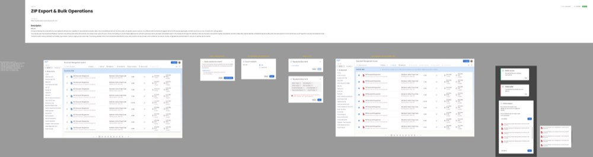

The selection model is specified once because getting it wrong once gets it wrong everywhere: the misunderstanding that exports 50 of 460 documents also deletes 50 of 460.

Every one of these reports per item, never per batch — 460 documents where 12 fail leaves 448 done and names the 12 with a reason each (BLK-10).